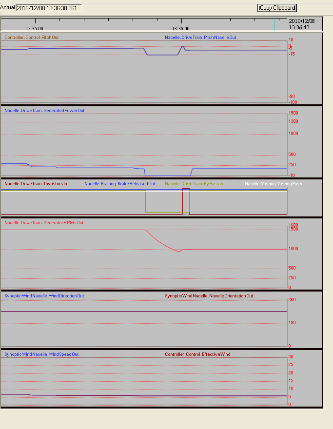

1- Follow the first 6 steps of the instructions in the section "Setting the conditions for a Wind Turbine to start operation".
In the last step, set a wind of 7 m/s in order to start a cutin in Large mode.
HINT: as we will use specific values of wind, you should guide the wind direction with the Nacelle to get a perfect matching between the effective wind and the value introduced in the wind widget.
HINT: with the PgUp/PgDwn keys change the wind speed in 1 m/s steps and ArrowUp/ArrowDwn in 0.1 m/s
2- After cutin with a wind of 7 m/s with the default parameters the "RPMs Gen" should be around 1502 rpms.
3- Go to the Synoptic SynopticWindNacelle at click with the mouse in the "Wind speed" widget to change the wind speed value to 6.4 m/s using the "ArrowDwn". You will see taht the "RPMs Gen" slow down a little, as well as the Gen Power, and nothing more happens. Now change the wind speed to 6.0 m/s and see that after a few seconds the Controller sequences a change to Small as you can see in the strip recorder.
You should get a striprecorder view similar to the one shown in next figure, where you can verify that the Controller :
1. Reduces the Pitch during a short time so the Production practically drops to zero, at which moment (no current through the Bypass) it sets the Bypass to Off. The contactors for Large and Small can be changed now because the Generator is disconnected from the Grid.
2. Sets Pitch will pass to -15º , to slow down the rotor looking to arrive to 1000 rpms.
3. It lets the rpms to drop below the target (1.000 rpms) , till approx.. 950 rpms.
4. At that moment sets the Pitch to a high value (around 0º) so the rotor speed will grow again, approaching 1.000 rpms from below.
5. Near 1000 rpms the Thyristors will start conducting again to achieve a soft Grid coupling.
6. After 3 seconds (approx.) the Bypass will be set On again, so the Wind Turbine will be again in production, with a "RPMs Gen" about 1005,8 rpms.
